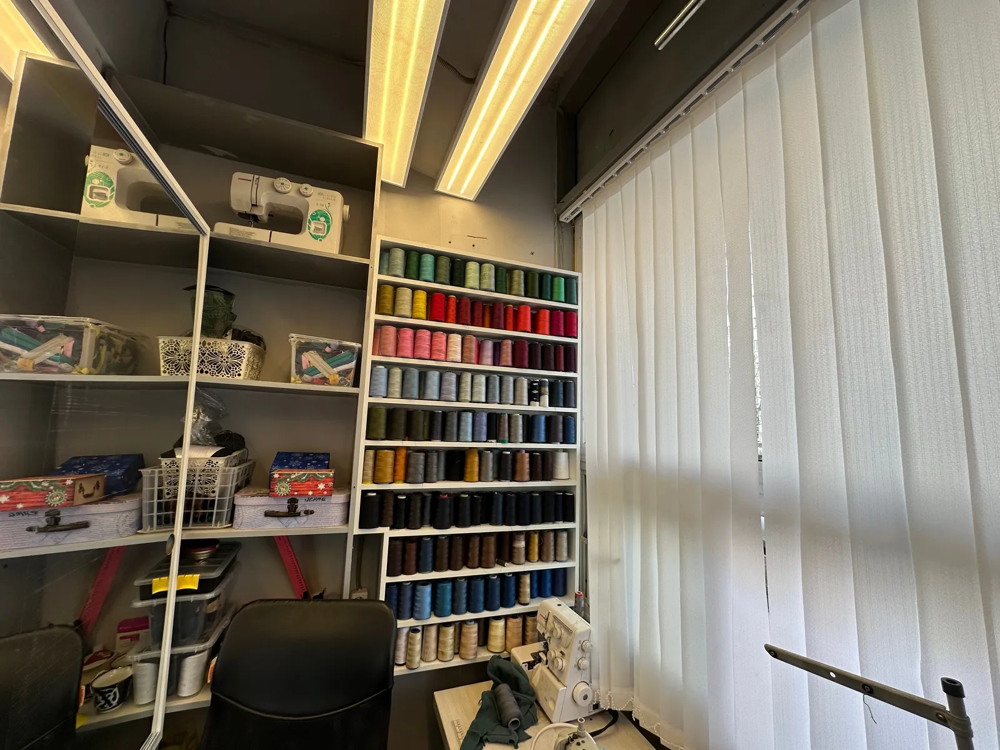
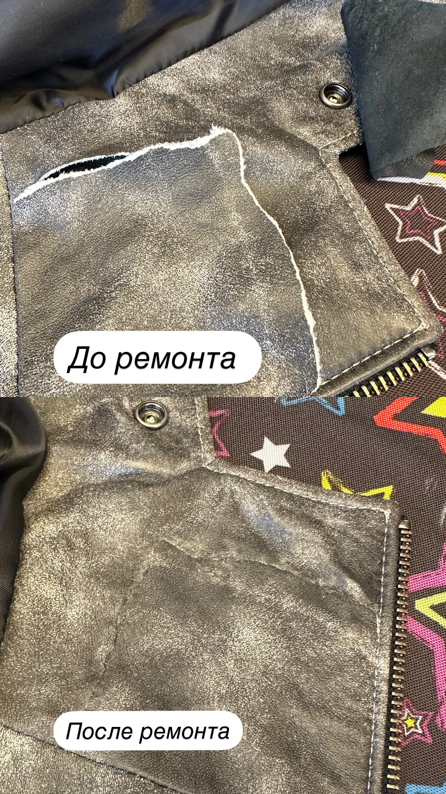
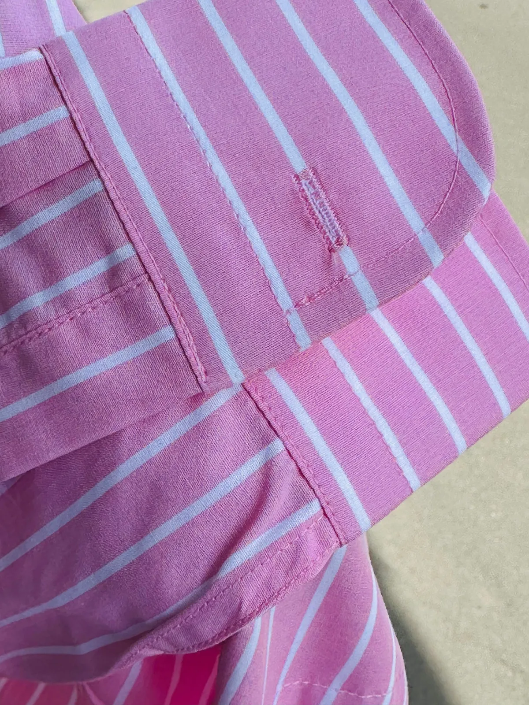
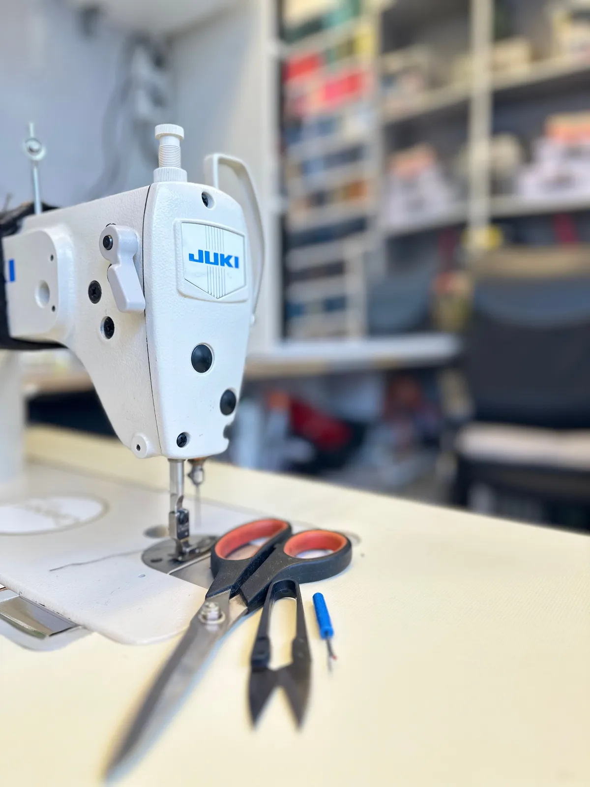

Ремонт одежды · подгонка · пошив
«Дом быта Плюс» на Гримау – подшить, ушить, заменить молнию, часто за один день
Мастер Лола укоротит брюки, подгонит платье, поменяет молнию, починит кожу и мех. Москва, улица Гримау, 10.
- Рейтинг 4,9 на Яндекс Картах
- Мелкий ремонт – от 200 ₽
- Пн–сб 10:00–20:00

Услуги и цены
Мелкий ремонт – от 200 ₽ (цена с карточки на Яндекс Картах). Остальное мастер оценит, когда посмотрит вещь.
Ремонт и подгонка
- Мелкий ремонт одеждыот 200 ₽
- Укоротить, ушить, расширитьджинсы, брюки, юбки, платья, кофтыуточнить
- Подгонка по фигуреуточнить
- Штопка джинсов и заплаткиуточнить
- Кнопки и люверсыуточнить
Молнии и верхняя одежда
- Замена молнии на джинсах, куртках, ветровкахуточнить
- Замена бегункауточнить
- Замена подкладкиуточнить
- Ремонт и реставрация кожи и мехауточнить
- Перекрой шуб и дублёнокуточнить
Шторы и пошив
- Подшить шторы и тюльуточнить
- Индивидуальный пошивуточнить
Как сдать вещь
- 01
Звоните
Говорите, что нужно сделать, – подскажем цену и срок.
- 02
Приносите вещь
Улица Гримау, 10, 1 этаж. Пн–сб с 10:00 до 20:00.
- 03
Примерка
Мастер наметит длину по фигуре и подскажет, как лучше.
- 04
Забираете
Простой ремонт часто готов на следующий день.



За что нас хвалят в отзывах
Быстро
Из отзыва: «Всегда все очень быстро, буквально за день».
Как из магазина
Из отзыва: «выглядят так, будто прям из магазина такие получила».
Дырок не видно
Из отзыва: «Реанимировала любимые джинсы дочери, так что дырки вообще не заметны».
Адекватные цены
Из отзыва: «Работа выполнена качественно, в короткие сроки и по адекватной цене».
Отзывы с Яндекс.Карт
«Очень рада, что нашла это ателье и мастера Лолу) Реанимировала любимые джинсы дочери, так что дырки вообще не заметны ) Также помогла расширить новые джинсы неподходящие по размеру ) Всегда все очень быстро, буквально за день Спасибо большое, обращусь еще не раз)»
Lyubov Stolyarova · 6 октября 2025
«Недавно воспользовалась услугами дома быта. Необходимо было подшить брюки мужу и отремонтировать рубашку. Хочу отметить высокий профессионализм и доброжелательность мастера Лолы. Работа выполнена качественно, в короткие сроки и по адекватной цене. Всем рекомендую.»
Елена П. · 28 августа 2025
«Благодарю Лолу за мои шторы! Переделала с люверсов на шторную ленту очень аккуратно и быстро.»
Анна В · 16 июня 2025
Отзывы с карточки на Яндекс.Картах, без правок.
Частые вопросы
Можно узнать цену, не приезжая?
Да, позвоните: +7 (985) 460-31-32. Мелкий ремонт – от 200 ₽.
Когда вы работаете?
С понедельника по субботу, с 10:00 до 20:00. Воскресенье – выходной.
Можно сделать срочно?
Позвоните заранее – скажем, успеем ли за день.
Шубы и кожу ремонтируете?
Да: ремонт и реставрация кожи и меха, перекрой шуб и дублёнок, замена подкладки.
Позвоните – скажем цену и срок
- Адрес
- ул. Гримау, 10, 1 этаж, Москва
- Часы
- пн–сб 10:00–20:00, вс выходной
- Телефон
- +7 (985) 460-31-32